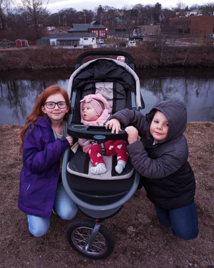
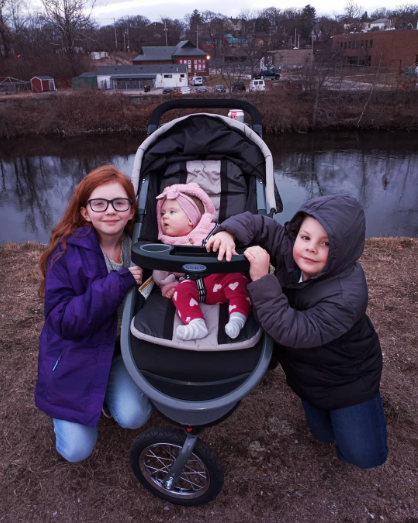

My Bio
I am Kerri Wilkinson, a strong, independent person who loves watching movies and food and naps during thunderstorms. I live in Barrington with my three children and my cat, Harvey.Committment is what drives me forward, and I always strive to be the best version of myself I can be. My kids are absolutely the most important thing in my life. Being a single mom defines a lot of my values and goals and being with them is the main reason I chose to go back to school at 36.
My oldest daughter, Izzy, is 14. She loves to read, she's a talented artist, and she knows everything there is to know about animals. When she grows up she wants to study animal behavior, especially the behavior of birds. She is ridiculously smart, funny as heck, and she is such a good big sister.
Henry, who is 8 years old, has so much charisma and charm. He makes friends everywhere he goes. I call him my partner in crime. He and I play a lot of video games together. He is naturally great at math. He is the most loving brother that any sibling could ask for.
Ellie, who is 3 and a half, is the baby of the family. She is so full of joy and has the most amazing giggle you've ever heard. It is literally impossible not to smile when she talks to you. She is bubbly and fun and sassy. She loves the water so much, Izzy used to say we should have put her in an aquarium instead of a crib. She loves music, dancing, painting, and her big brother and sister.